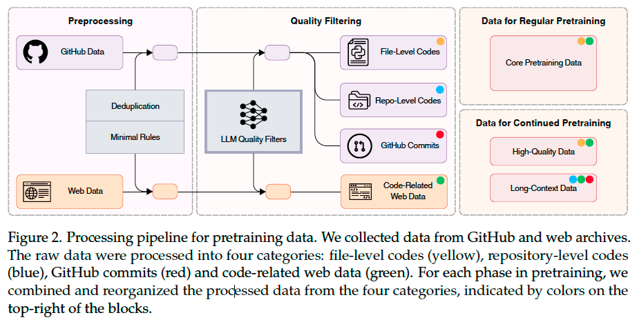
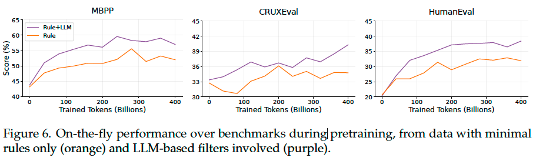
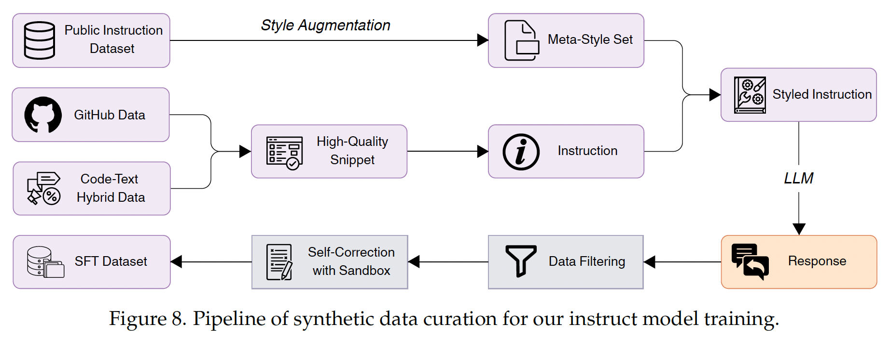
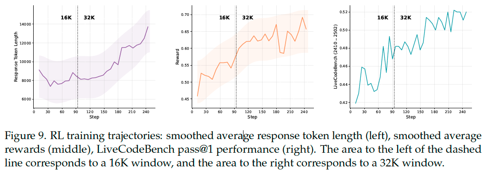
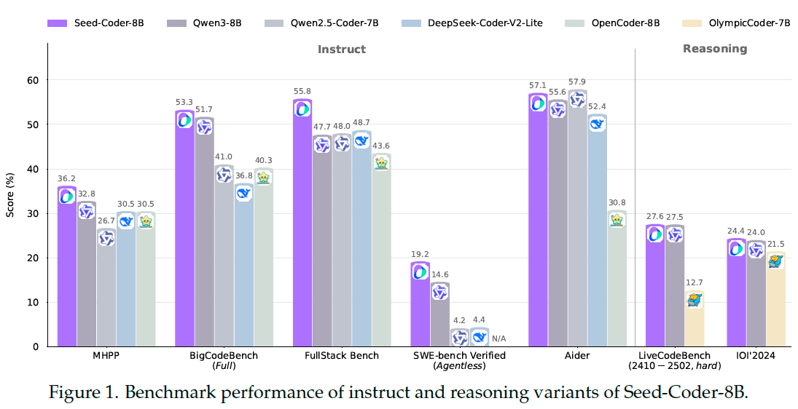

Seed-Coder#
Note
We introduce Seed-Coder, a series of open-source LLMs comprising base, instruct and reasoning models of 8B size, minimizing human involvement in data construction.
Pretraining#

GitHub Data#
Preprocessing. We performed exact-deduplication using SHA256 hashes of contents and neardeduplication via the MinHash algorithm. Following the deduplication, we checked the remaining files via syntax parsers such as Tree-sitter and discarded those with syntax errors.
Quality Filtering. To overcome the shortness of human-oriented filter designs, we propose a file-level scoring model to filter out low-quality code files from GitHub data in one shot. To construct the specific training set for this filter, we randomly sampled 222, 066 code files from the most commonly used programming languages and queried DeepSeek-V2-Chat to assess four key aspects: readability, modularity, clarity, and reusability (LLM as judge). To scale the scorer to the full pretraining GitHub dataset, we opted for a regression model rather than a binary classifier.

Commits Data#
To utilize GitHub commits data for pretraining, we format each sample as a code change prediction task: given a commit message and its associated context, the model predicts the modified file paths and the corresponding code changes.
Instruct Model#

Data Construction: Diversity#
During prompt synthesis, we prioritized prompt diversity to enhance the LLM’s robustness across diverse scenarios and edge cases.
Seed Snippet Diversity. We collected code snippets from multiple high-quality sources.
Style Diversity. Although synthetic data offers an effective and cost-efficient alternative to real-world data, it often lacks the stylistic diversity observed in actual user prompts. We built a meta-style set by collecting diverse instructions from public datasets. To further enrich this set, we applied style augmentation, wherein two styles were randomly selected and blended to synthesize new styles.
We additionally incorporated code-related data sampled from WildChat into our SFT dataset.
Data Filtering: Quality and Difficulty#
Quality Filtering. We used Tree-sitter to eliminate responses containing syntax errors. For model-based filtering, we prompted an evaluation model to score responses based solely on correctness, discarding those with low scores.
Difficulty Filtering. We first classified the topic of each instance using InsTag. Subsequently, we prompted a model to assess the difficulty level of each instance within its domain. Instances receiving a difficulty score lower than 3 out of 10 were discarded from the dataset.
Self-Correction with Sandbox Verification#
In our experiments, we observed that examples with higher difficulty scores often exhibit higher error rates, resulting in many challenging instances being filtered out during quality filtering. We prompted the model to generate solutions along with corresponding unit tests, evaluate the outputs within a sandbox environment, and iteratively refine any failed solutions until all tests passed or a maximum number of revision attempts was reached.
DPO#
We constructed on-policy preference data for DPO. We first selected task-relevant prompts and sampled hundreds of candidate responses for each. These responses were then evaluated in a sandbox environment using generated code and corresponding unit tests.
Training Recipe for Instruct Model#
We fine-tuned Seed-Coder-8B-Instruct in two stages:
We performed SFT on approximately 3 million high-quality instruction dataset described above. We employed difficulty-aware sampling to prioritize higher-difficulty examples during training. The model was trained for 3 epochs using a learning rate of 2e−5 and enabled sequence packing to improve training efficiency.
We applied DPO on approximately 20, 000 high-quality preference pairs by focusing on challenging examples from these domains.
Reasoning Model#
We first performed a LongCoT warmup phase, followed by GRPO-based RL training to further enhance its capabilities.
Data#
We collected CodeContests and ICPC problems, and gathered model-generated solutions from DeepSeek-R1 on these tasks. Additionally, we incorporated datasets such as open-r1/codeforces-cots. Note that, for CodeContests and ICPC data, we applied sandbox-based rejection sampling during collection, retaining only correct model generations. For the RL training, we utilized the aforementioned datasets combined with LiveCodeBench data collected prior to August 2024.
Warmup Step#
We initiated the warmup process from the base model rather than the instruct model, despite the latter achieving higher scores immediately following warmup completion. This decision stemmed from our observation that the instruct model frequently collapses into typical SFT training data patterns during RL.
A large volume of distillation data may exceed the inherent capabilities of the base model and thus fail to accurately reflect its true potential. To preserve the model’s own exploration space, we chose not to further scale up the distillation data.
Training Recipe for Reasoning Model#

During the RL training process, we used the verl framework for GRPO training, and adopted optimization techniques similar to DAPO. In addition, we applied further modifications:
Optimized Curriculum Learning. While GRPO inherently incorporates curriculum learning by filtering entirely correct or incorrect samples, we further filtered simple problems and qualify groups containing positive-only examples and format errors as simple problems.
Progressive Exploration Strategy. We adopted a gradually expanding strategy for sequence length and rollout number during training.
Results#
